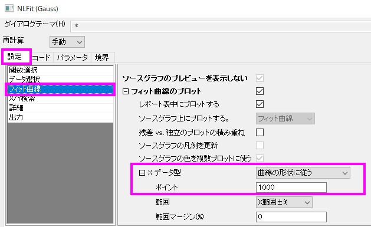

Jagged-Fit-Curve
最終更新: 2018/08/08
もし結果の曲線がなめらかではない場合、フィット曲線に対応しているXデータを変更する必要があります。
そのために、メニューから解析：フィット：非線形曲線フィットを選択してNLFitダイアログを開きます。そして設定タブでフィット曲線を選択します。 フィット曲線のプロットのブランチを広げ、Xデータ型の設定でX軸のスケールを変更するかフィット曲線を描く際に使われるポイントの数を増やすことができます。

キーワード: 良いフィット, 悪いフィット